TODAY · 第
137
个背词日

它想吃掉你今天的
120
个词
答对一个，它退一步
18
/ 120 词
新词 42 · 旧词 78
上桥迎战 · 120 词
学习
词表
查词
比赛
我
方案三 · 它占据中心（角色即主角）
小馋怪直接站上首页正中心，配一句世界观标题「它想吃掉你今天的 120 个词」，数据退到它脚下用纯排版呈现。
这一版最彻底地摆脱了「公共风景壁纸 + 日历签到 + 大数字」的构型：首页第一眼看到的是
我们的角色
，不是一个数字。
代价：角色占掉 232px 高度，信息密度最低；标题文案的语气要你认可。